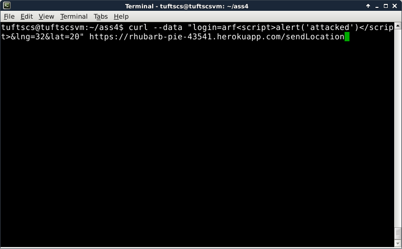
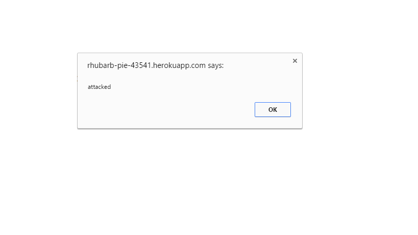
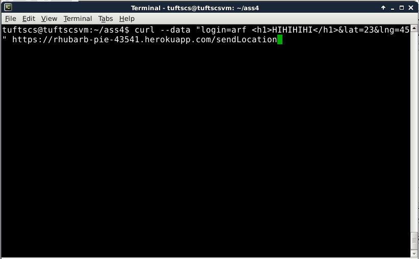
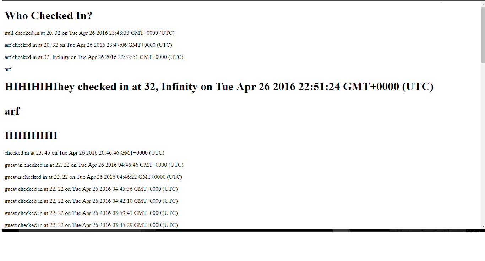
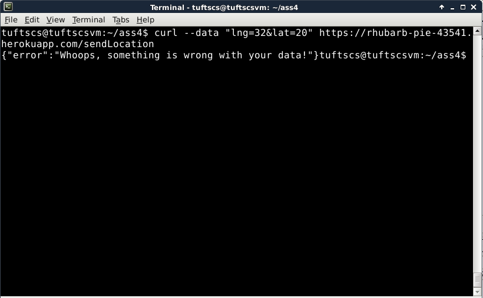
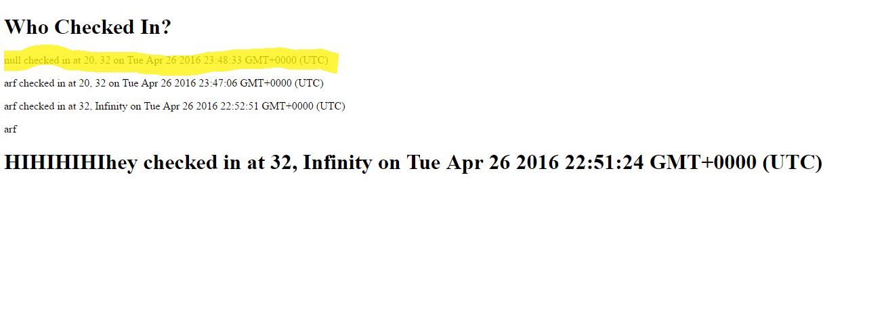

Security Assessment of the Server for Historic Landmarks
Created by Rihab Fahad
Introduction
The assignment was to test Lucas Machamer's Server for Historic Landmarks, as developed by him on assignment 3, for security and privacy problems. According to the specifications from assignment 3, the server was to utilize Heroku, Node.js, Express web framework, and MongoDB in order to create "a web application that maintains location check-ins and served the data of landmarks within a mile of where the [user] is." This report outlines three key security and privacy errors that were found, and how they can be fixed.
Methodology
Testing was carried out through a black-box and white-box testing. I was first given only the heroku url, and using my knowledge of the assignment, attempted to attack the site using xss and html-injection, as I knew that there was a post command that likely had not been prepared to protect against such attacks. After getting the source code from Lucas Machamer, I discovered a security error in his code that could be exploited.
Abstract of Findings
The security issues found are mostly based off the server not checking if the user's input is valid/possibly malicious. There were two instances where the user could input text that acted as code when displayed by the server. As well, there was a particular instance where the site uploaded data to the MongoDB server even though the input data was not complete. This could easily be exploited in many instances in order to upload code that just inherently hides on Mongo to be later called.
Issues Found
- Cross-Site Scripting
- Affects POST API (/sendLocation)
- Severity: High: If a script can be added to the database, which is then displayed on the homepage, a malicious user can inject any sort of script and affect all users of the server. While the script I injected was a simple alert, more complex scripts could phish users or break the website itself, for example.
- Description: I found this problem by submitting curl data with a script attached to the "login" portion of the query. I knew that most people doing assignment 3 would not protect against an xss attack, so this was easy to exploit.

- Proof: The following is a popup when accessing the website:.

- Resolution: An easy fix for this problem would be to check all user input for such scripts and on-the-fly convert any "<" or other html indicators to their stringified versions, so any code that is inserted into the database would not be able to be run.
- HTML Injection into POST API
- Affects POST API (/sendLocation)
- Severity: High: This is the same as xss, however it can affect all users. Since the homepage displays the login and other credentials of all users, the html could modify the homepage in such a way that it disrupts the entire server.
- Description: This follows the same reasoning as the previous error. While this is similar to an xss attack, this is based entirely off of other html code, not just scripts.

- Proof: The following shows how the page is changed when submitting the previous code. As you can see, multiple instances of injected html were used in order to test the security issue.

- Resolution: As noted above, an easy fix for this problem would be to check all user input for such scripts and on-the-fly convert any "<" or other html indicators to their stringified versions, so any code that is inserted into the database would not be able to be run.
Null Addition to Database
- Affects POST API (/sendLocation)
- Severity: Medium: This is more an issue of the creator not following the specifications of project 3. If all three inputs to sendLocation were not found, then an error was to be returned without the inputs being added to the database. However, this could potentially be a huge issue as unauthorized or incomplete data could be added to the database, and when displaying it on the front-end of the system, incorrect information would be displayed.
- Description: This error was found when looking through the source code. I noticed that while the error message is still spit out, the null user is first added to the database, so I tested it.

- Proof: Highlighted null entry:

- Resolution: In order to fix this error, there should be an if statement checking to see if all three fields are submitted before the main db.insert() is called.
Conclusion
Issues with the server make it easy for malicious users to modify and insert html code/scripts that change the server for all users. As well, the database is not managed well enough, so data that should be rejected is added to the database. These are all relatively easy but pesky problems to solve, but I believe in Lucas. God bless America.